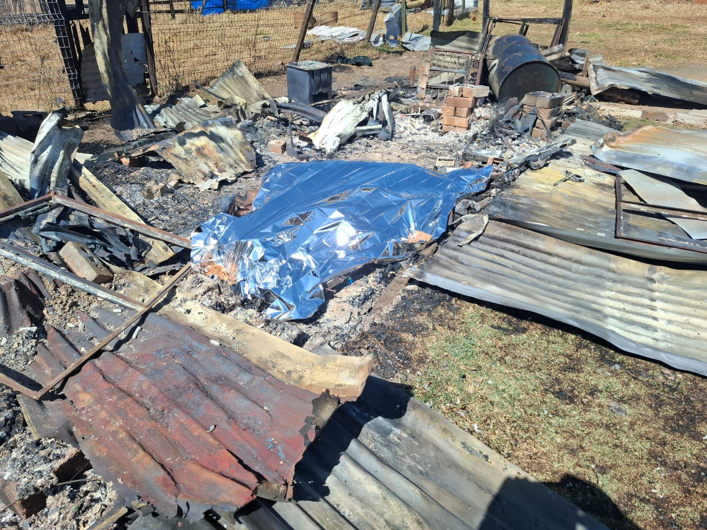

Mystery Surrounds Charred Body Found in Katlehong North: Possible Mob Justice Link
This morning, Wednesday 20 August 2025, firefighters from the Disaster and Emergency Management Services (DEMS) at Thokoza fire station hurried to the scene following urgent calls from the informal settlement, where a makeshift dwelling was on fire. The firefighters arrived promptly at 10:15 AM with a Water Tanker fire engine. Upon their arrival, they discovered that the flames had already been put out and residents had dismantled
the makeshift home. According to DEMS, the deceased, a 35-year-old man, has been identified. However, his name is being withheld for the time being. DEMS suggested that the fire likely happened overnight, with emergency services only being notified this morning. The police are currently conducting an investigation into the incident, which is reportedly connected to acts of mob justice.
SASSA facing 62% Vacancy Rate Crisis
A recent inquiry in parliament by Democratic Alliance Member of Parliament Alexandra Abrahams highlighted that SASSA’s established staff framework encompasses 18,603 permanent roles, yet only 7,076 are filled at present. This results in a vacancy rate of 62 percent, with 144 funded positions open at various recruitment stages and a total of 128 posts having been vacated.”This indicates that the Agency has a 2% vacancy rate for funded roles,” stated Social Development Minister Nokuzola Tolashe.
Tolashe clarified that, with 272 funded vacancies out of 18,000 overall vacant positions, numerous posts remain unfunded due to limitations within the Compensation of Employees (CoE) budget. ”Faced with challenges stemming from a limited Compensation of Employees budget, the Agency resorts to employing contract workers to fill these gaps and makes use of ICROP to extend social security services to isolated communities,” she noted.
Furthermore, the Agency intends to automate its business operations, which is expected to enhance services and improve efficiency in service delivery. Local offices are particularly impacted, with only 4,806 staff members managing grant applications and client inquiries, resulting in 86 funded roles remaining vacant. KwaZulu-Natal tops the list with the most filled local office positions at 1,071, followed by the Eastern Cape with 833, and Gauteng with 583. The Northern Cape remains the most understaffed, having only 258 employees.
Wesbank Family Discovers Fetus Instead of Chicken Meat
She recounted: “She didn’t pay him, but said she would braai the meat and share it with him. After starting the fire, when she went to season the meat, she opened the plastic bag and found the foetus. She was so horrified that she ran out of her house to call a neighbor and the police.”
She described the foetus as a premature baby girl. Walton stated: “What the man told us is that he was in Mfuleni when a woman handed him the plastic bag, saying it contained chicken, and also gave him bre ad. “When he reached Wesbank, he tried to sell it to another woman, but since she had no money, he gave the meat to my sister. “My sister is extremely traumatized and has asked the police for counselling due to what she witnessed.
“The police came, and on Tuesday morning, they requested the man who sold us the c hicken to take them to the location where he received the plastic bag. I’m unsure if anyone has been arrested for this.” Authorities confirmed the discovery. Police spokesperson Captain FC van Wyk stated: “Mfuleni police have opened an inquest case following the discovery of a foetus on Monday around 5:55 PM.
Reports indicate that it was found in a plastic bag by an adult male on Appleby Road in Wesbank while searching for scrap. “He promptly reported the finding to the police, who responded, and the foetus was sent to Forensic Pathology Services for analysis to determine its possible origin. “The investigation is ongoing, and no arrests have been made at this point.” Anyone with information regarding this incident is urged to contact investigating officer Detective Sergeant Vuyelwa Tshetsha at 021 909 9670, Crime Stop at 08600 10111, or use the MySAPS app anonymously.
Not All of Us Are Criminals
Mali made these remarks during a press briefing yesterday, responding to online allegations that taxi drivers are coercing individuals into using their services, as well as the recent brutal murder of a 27-year-old e-hailing driver at Maponya Mall in Soweto.
The death of Siyanda Mthokozisi Mvelase is thought to be connected to ongoing taxi violence, prompting the national leadership of Santaco to address the matter.
Mali emphasized that this incident should serve as a significant warning for everyone in the public transport sector.
“We cannot and will not excuse this behavior. We cannot hide behind slogans, uniforms, or silence. There is no room in our province or our industry for anyone who exploits Santaco or the taxi sector as a façade for criminal activities and intimidation,” he stated.
Mali affirmed the organization’s commitment to taking decisive actions.
“Santaco Gauteng is collaborating closely with law enforcement and our internal teams to aid in the investigation and ensure that those culpable are held accountable,” he said.
Mali also addressed rising concerns regarding taxi patrollers and marshals allegedly pressuring individuals not to use private vehicles, even preventing them from transporting their families.
“This behavior is unacceptable, unconstitutional, and illegal,” he asserted.
“As Santaco – particularly Santaco Gauteng – we completely dissociate ourselves from such practices . We are reviewing all reported incidents to identify those accountable.”
“To every South African who has faced harassment, threats, or intimidation from individuals claiming to act on behalf of Santaco Gauteng, I say: you possess every right to choose your mode of transport. Collaborate with us and report any criminal activities to the authorities.”
He affirmed their dedication to rebuilding trust with the public.
“We recognize the responsibility we bear. Collaborate with us to report these offenses to the authorities . Assist us in ensuring your safety and restoring trust between us.”
Mali concluded: “We are not all criminals. We are not all violent.”
“The vast majority of our drivers get up at 3 am to serve our people with dignity and respect. We seek your partnership, vigilance, and certainly, your forgiveness.”
Five Compelling Reasons to Enjoy a Meal at Neck & Deck Restaurant in Bothongo Rhino & Lion Nature Reserve
From feeding Skye the giraffe to savoring wood-fired pizzas while zebras and nyalas wander nearby, this unique restaurant guarantees an unmatched South African adventure for everyone.
'Bath Salts' Drug Suspected In Miami Face-Eating Attack
The victim, Ronald Poppo, is in critical condition and "fighting for his life," the Miami Herald says. He was homeless and living under a causeway.
Now, there's a theory emerging that Eugene was high on "bath salts," which as NPR's Greg Allen has reported are a drug "that produces a meth-like high and sometimes violent behavior in users."
Armando Aguilar, president of the Miami Fraternal Order of Police says the similarity between the face-eating attack and some other recent incidents in Miami are striking, ABC News reports:
"The cases are similar minus a man eating another. People taking off their clothes. People suddenly have super human strength," Aguilar said, according to ABC. "They become violent and they are burning up from the inside. Their organs are reaching a level that most would die. By the time police approach them they are a walking dead person."